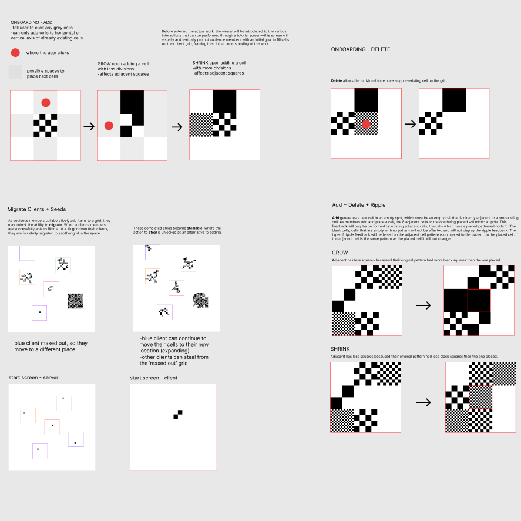
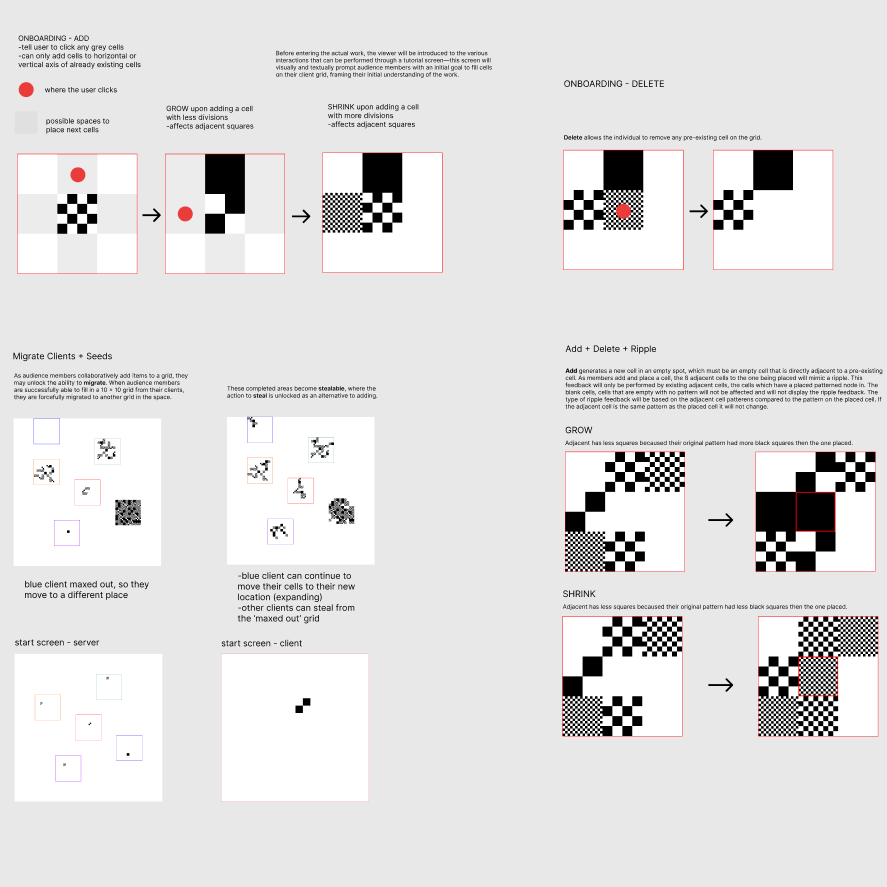

Dandelions is an abstract 2D digitized canvas that allows collective interaction by adding, editing and removing tiles within the online space. Audience members can join the art piece through their own computer, tablet, or phone to view and create various clusters of pixels alongside others on the webpage. Reinforcing its minimalist influences, all possible functions that participants can act on are explicitly revealed, immediately revealing the idea of building and erasing tiles within the space.
The piece is composed of a variety of checkerboard tiles, with existing nodes resizing based on what users append to them in 10 second intervals. With a completely uniform pattern for each cell, an emphasis is placed on the beauty of the scaling algorithm, creating organic movements with the iconically digital unit of the pixel. The form also elicits the history of how computer graphics have long used these individual squares to draw images due to digital limitations. To capture the aesthetic qualities of the technology we use, decorative ornamentation and semantics of color are removed from the piece to emphasize the core of computer graphics where the use of formal patterns simplify any indication of how humans interact with the piece.
Much of this approach adheres close to the abstract movement of minimalism, emphasizing the reduction of form, material and narrative meaning. Instead of standing for something else in historical or social discourse, viewers are left to find beauty in the piece itself—all materials used speak for how the piece is constructed, rather than representing or imitating something in life. Precedent artists inspired our formalist approach like Piet Mondrian who expressed the essence of reality through patterns, lines and colors as seen in his works Broadway Boogie Woogie (1943) and Checkerboard Compositions with Light Colors (1919).
Minimalism has translated into our work through our usage of patterned nodes and how the heterogenous units that create homogeneous groupings to express movement and expansion. While there are elements of the piece that echo ideas of migration, the allegory is not enforced and left for audience interpretation. Dissonance in the name aside, the piece reflects upon the visual illusions that can be created through the most basic component of computer graphics of the pixel. Like Tom R. Chambers’ remix, My Dear Malevich and Pixelscapes (2010) that paid homage to Kazimir Malevich’s Black Square (1913), checkers are used in our magnifiable pattern to highlight the square form of the pixel.
Playing on Dieter Daniels’ (2008) Strategies of Interactivity, Dandelions adheres more closely to the strategies of collective structures in the media realm and exploring a closed system. This pertains to the human-to-human interaction encouraged by the system highlighting the power of the users’ accumulated input which forms the final piece. Similar to Yoko Ono’s Cut Piece (1964), the overlap of participants’ actions is not necessarily destructive or conflicting with one another. Rather, the beauty of the algorithm or underlying score of the piece is revealed where interference between people will result in a controlled, aesthetic form. With a set tempo in pacing how often users can interact with the space, the piece provides time to reflect on how the algorithms regulate collaboration and collective input.
 
